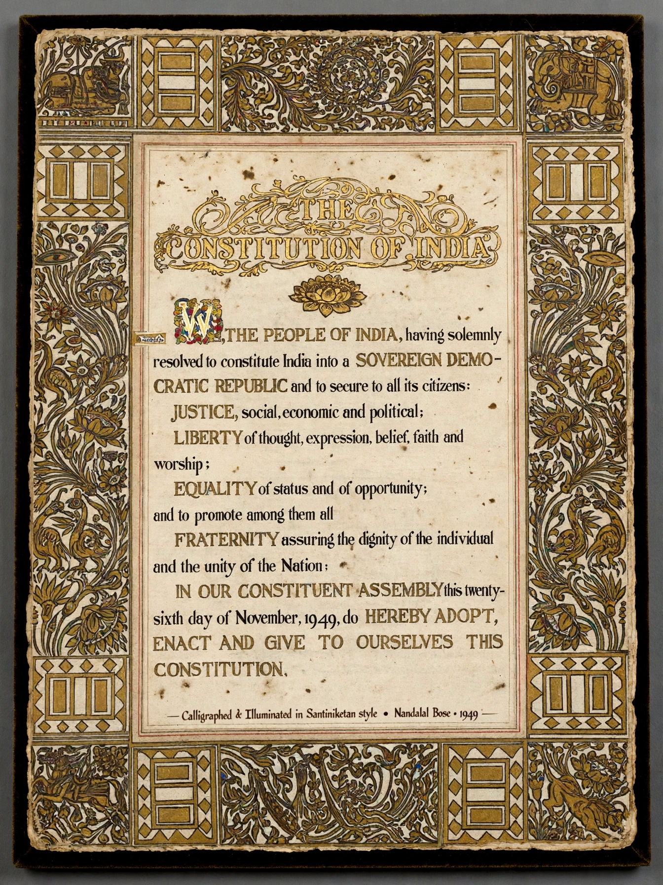

Constitution of India
From Wikipedia, the free encyclopedia
The Constitution of India is the supreme law of India. The document lays down the framework that demarcates fundamental political code, structure, procedures, powers and duties of government institutions and sets out fundamental rights, directive principles and the duties of citizens. It is the longest written national constitution in the world.

The original text of the Constitution of India, calligraphed by Prem Behari Narain Raizada and illuminated by artists of Santiniketan.
It was adopted by the Constituent Assembly of India on 26 November 1949 and became effective on 26 January 1950, the date celebrated annually as Republic Day. The constitution replaced the Government of India Act 1935 as the country's fundamental governing document, and India became a sovereign, democratic republic. B. R. Ambedkar, chairman of the drafting committee, is widely regarded as its chief architect.
Features
Borrowing from several sources — including the constitutions of Britain, the United States, Ireland, Canada, Australia and the Soviet Union — the document establishes a parliamentary system in a federal structure with unitary features. It originally contained 395 articles in 22 parts and 8 schedules; through more than one hundred amendments it has grown substantially. Part III guarantees fundamental rights enforceable by the courts, Part IV sets out Directive Principles of State Policy that are not judicially enforceable, and Part IV-A, added in 1976, lists fundamental duties.
Amendment and basic structure
Article 368 prescribes the amendment procedure, requiring special majorities in Parliament and, for certain provisions, ratification by half the state legislatures. In Kesavananda Bharati v. State of Kerala (1973) the Supreme Court of India held that Parliament's amending power does not extend to altering the constitution's basic structure — a landmark limitation that has since been used to strike down amendments.
See also
Fundamental rights · Parliament of India · Supreme Court of India · Basic structure doctrine